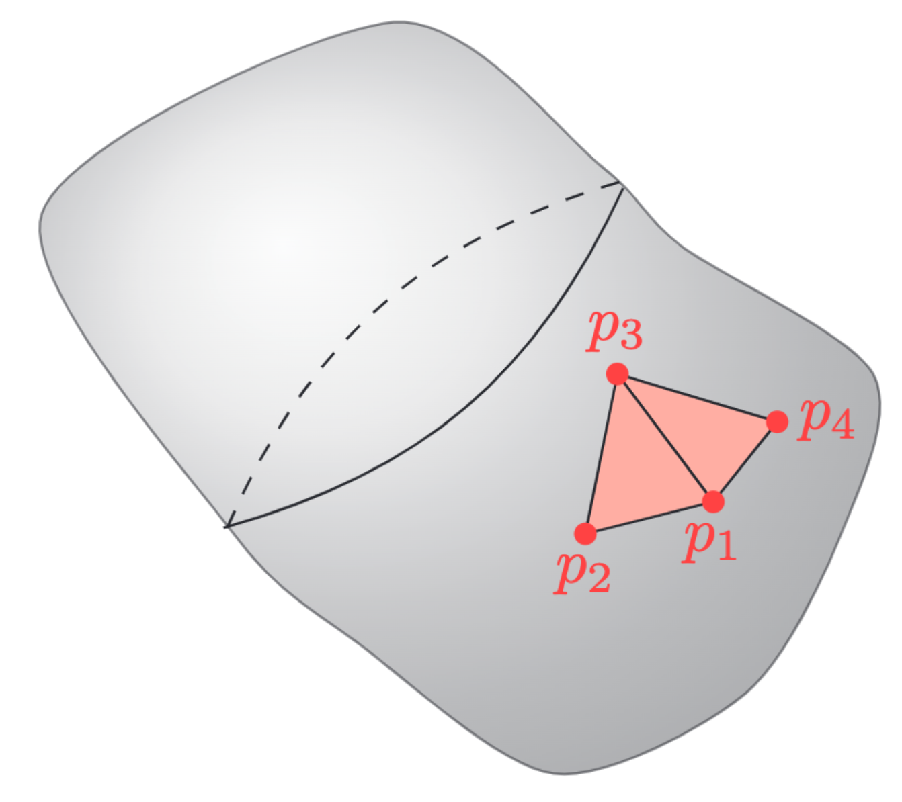

Elements
A key insight is that the element serves two purposes: It represents a subdomain of the original domain (also referred to as the geometry) while also describing parts of the unknown function of interest. In the case of surface elements, which are the ones used for BEMs, the parametrization of an element (denoted by $e$ in the following) is done as
\[ \mathbf{x}^e(\mathbf{u}) = \mathbf{X}^e\mathbf{N}(\mathbf{u}) \in \Gamma^e, \quad \forall \mathbf{u} \in \mathcal{L},\]
where $\mathbf{X}^e$ is a matrix with columns equal to the interpolation nodes of the geometry, $\mathbf{N}(\mathbf{u})$ are the shape functions, $\Gamma^e$ is the element in global coordinates and $\mathcal{L}$ are the local coordinates. In 3D a triangular element can look as

The element description of the geometry allows for the function approximation of $p$ to be done easily as
\[ p(\mathbf{x}^e(\mathbf{u})) = \mathbf{T}(\mathbf{x}^e(\mathbf{u}))\mathbf{p} = \underbrace{\mathbf{T}(\mathbf{x}(\mathbf{u}))(\mathbf{L}^e)^\top}_{\mathbf{T}^e(\mathbf{u})}\underbrace{\mathbf{L}^e\mathbf{p}}_{\mathbf{p}^e} = \mathbf{T}^e(u)\mathbf{p}^e, \quad \mathbf{u} \in \mathcal{L}\]
where $\mathbf{L}^e$ is a permutation-like matrix that extracts the relevant values of $\mathbf{p}$ and orders them such that they correspond to the local basis functions of $\mathbf{T}^e(\mathbf{u})$. The local basis functions are usually chosen as (Lagrange) polynomials of degree $d$, but other basis functions such as e.g. Legendre polynomials and splines have also been applied with success.
For a linear element $e$ all three corners corresponds to a value of the global vector $\mathbf{p}$. For e.g. an element could have local corner values given by $\mathbf{p}^e = \begin{bmatrix}p_1 & p_4 & p_3 \end{bmatrix}^\top$. This element would have $\mathbf{L}^e$ given as
\[ \mathbf{L}^e = \begin{bmatrix} 1 & 0 & 0 & 0 & ... & 0\\ 0 & 0 & 0 & 1 & ... & 0\\ 0 & 0 & 1 & 0 & ... & 0 \end{bmatrix}.\]
Note that $\mathbf{L}^e$ only an artifact of the mathematical description. Any reasonable implementation should utilize indexing instead of multiplication with $\mathbf{L}^e$.